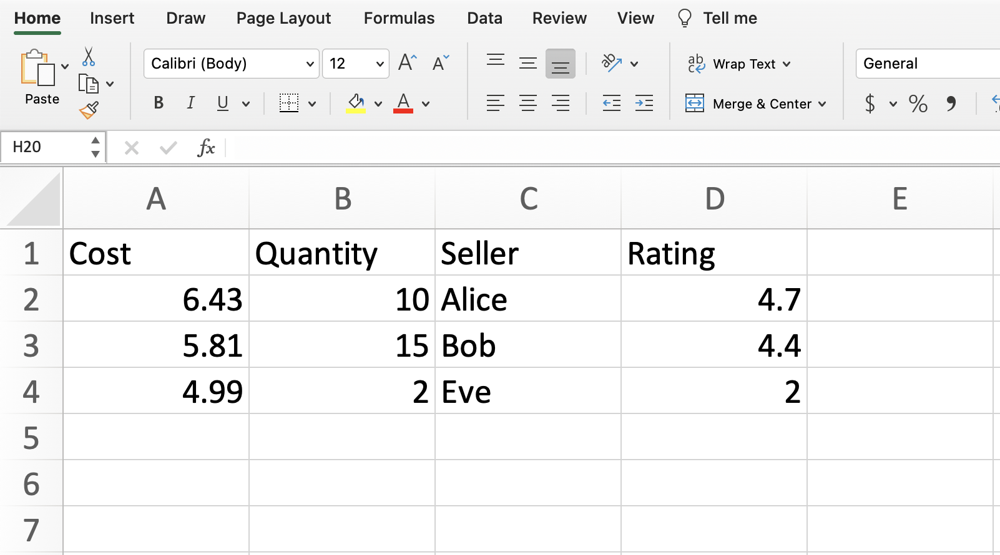

Week 2 Monday#
Announcements#
Quiz 1 is Tuesday during discussion section in-person. Based on Worksheets 1-2. Closed book and closed computer, completed on paper. I suggest studying using primarily the worksheets from Week 1, and secondly the lecture notes from Week 1.
Worksheets 1 and 2 are due 11:59pm tonight on Canvas.
Worksheet 3 distributed today.
Maya (one of our three LAs) is here to help.
Why pandas?#
Imagine we have made our own tiny dataset like the following. It’s shown here and is attached to Deepnote as the file our-own.csv. Most of the data files we work with will be csv files (which stands for comma-separated values). Working with Excel files (xlsx files) is basically the same, but there is an extra step, so I usually would recommend converting to a csv file first.

What approach could we use to represent this in Python?
Wrong approach 1: as a list of lists#
Here is a pure Python approach (not using any libraries) where we represent the data as a list of lists. We’re skipping the column names, but that’s not the biggest issue.
our_list = [
[6.43, 10, "Alice", 4.7],
[5.81, 15, "Bob", 4.4],
[4.99, 2, "Eve", 2]
]
Compute the average value in the “Rating” column (the column at index
3).
Any approach using this list-of-lists data type is inevitably going to be a little awkward.
We start out with some practice with for loops.
ratings = []
for inside_list in our_list:
print(inside_list)
[6.43, 10, 'Alice', 4.7]
[5.81, 15, 'Bob', 4.4]
[4.99, 2, 'Eve', 2]
Notice how the print("hi") line is indented, and how "hi" gets printed three times (once each time through the for loop).
ratings = []
for inside_list in our_list:
print(inside_list)
print("hi")
[6.43, 10, 'Alice', 4.7]
hi
[5.81, 15, 'Bob', 4.4]
hi
[4.99, 2, 'Eve', 2]
hi
Notice how print("hi") is not indented here, and how it only gets displayed after the for loop is finished.
ratings = []
for inside_list in our_list:
print(inside_list)
print("hi")
[6.43, 10, 'Alice', 4.7]
[5.81, 15, 'Bob', 4.4]
[4.99, 2, 'Eve', 2]
hi
Now we get back to our original problem. We start out making a list of ratings. We use the append method (that is available for any list) to put the ratings onto the end of the ratings list, one at a time.
ratings = []
for inside_list in our_list:
ratings.append(inside_list[-1])
print(ratings)
[4.7, 4.4, 2]
We now compute the average. Notice the small rounding error (the true answer is exactly 3.7). These sorts of rounding errors are pretty much inevitable when working with floats (decimal values) in Python.
sum(ratings)/len(ratings)
3.7000000000000006
Be careful testing equality == with floats in Python.
# be careful with numerical precision
# that's also true in NumPy and pandas
sum(ratings)/len(ratings) == 3.7
False
Here is maybe the most famous example in Python of rounding issues. The following simple computation already fails. (Using equality is safer when working with integers instead of floats.)
0.1 + 0.1 + 0.1 == 0.3
False
Aside: Here is an example of how append works. We start out making a coopy of our ratings list.
r2 = ratings.copy()
We now append a string onto the end of it. (We can make strings using either single or double quotation marks. Here we use double.)
r2.append("chris")
Notice how "chris" has shown up at the end.
r2
[4.7, 4.4, 2, 'chris']
Aside for the Python experts: because we used copy, the original ratings list did not change.
ratings
[4.7, 4.4, 2]
Wrong approach 2: as a NumPy array#
It might be surprising that NumPy also does not work great for this data. Here is a reminder of how our_list looks.
our_list
[[6.43, 10, 'Alice', 4.7], [5.81, 15, 'Bob', 4.4], [4.99, 2, 'Eve', 2]]
I forgot to import NumPy. Here is the error message we receive. (Some error messages in Python are difficult to read, but this one is pretty clear.)
our_array = np.array(our_list)
---------------------------------------------------------------------------
NameError Traceback (most recent call last)
Cell In[15], line 1
----> 1 our_array = np.array(our_list)
NameError: name 'np' is not defined
Now we import NumPy.
import numpy as np
Now we are ready to convert our_list to a NumPy array.
our_array = np.array(our_list)
If you look closely, you might already notice that something has gone wrong.
our_array
array([['6.43', '10', 'Alice', '4.7'],
['5.81', '15', 'Bob', '4.4'],
['4.99', '2', 'Eve', '2']], dtype='<U32')
The data type of our_array is a NumPy array. (It’s written ndarray, where the “nd” stands for “n-dimensional”. It’s a reminder that the array could be one-dimensional, two-dimensional (like a matrix), or more. I usually just call it an “array” and don’t mention the “nd”.)
type(our_array)
numpy.ndarray
We can now get the last column, like what we did last week.
our_array[:, -1]
array(['4.7', '4.4', '2'], dtype='<U32')
Aside: this convenient slicing for multiple dimensions does not work with our list of lists.
our_list[:, -1]
---------------------------------------------------------------------------
TypeError Traceback (most recent call last)
Cell In[21], line 1
----> 1 our_list[:, -1]
TypeError: list indices must be integers or slices, not tuple
Back to NumPy. Notice how the mean method fails here. (Unlike last week where it worked.)
our_array[:, -1].mean()
---------------------------------------------------------------------------
UFuncTypeError Traceback (most recent call last)
Cell In[22], line 1
----> 1 our_array[:, -1].mean()
File C:\ProgramData\Anaconda3\lib\site-packages\numpy\core\_methods.py:180, in _mean(a, axis, dtype, out, keepdims, where)
177 dtype = mu.dtype('f4')
178 is_float16_result = True
--> 180 ret = umr_sum(arr, axis, dtype, out, keepdims, where=where)
181 if isinstance(ret, mu.ndarray):
182 ret = um.true_divide(
183 ret, rcount, out=ret, casting='unsafe', subok=False)
UFuncTypeError: ufunc 'add' did not contain a loop with signature matching types (dtype('<U32'), dtype('<U32')) -> None
Let’s look more closely at one of the entries in this column. Notice the quotation marks.
our_array[1, -1]
'4.4'
If we check the type, we are told this is some NumPy version of a string. (It should be a number!) The problem is the column of seller names. NumPy wants homogeneous data, where all data types are the same within an array. But our data set is most naturally made using different data types in different columns. That is a problem that will be solved using pandas.
type(our_array[1, -1])
numpy.str_
Aside: we can convert to floats externally (not within the original NumPy array) using the astype method.
our_array[:, -1].astype(float)
array([4.7, 4.4, 2. ])
If we want to convert a single value, we can use the built-in Python function float.
float(our_array[1, -1])
4.4
Right approach: as a pandas DataFrame#
The most important Python library in Math 10 is the pandas library. pandas is like the Python version of Excel.
Convert
our_listto a pandas DataFrame.
import pandas as pd
# analogous to np.array(our_list)
pd.DataFrame(our_list)
| 0 | 1 | 2 | 3 | |
|---|---|---|---|---|
| 0 | 6.43 | 10 | Alice | 4.7 |
| 1 | 5.81 | 15 | Bob | 4.4 |
| 2 | 4.99 | 2 | Eve | 2.0 |
Actually it’s better to import directly from the csv file.
Read in the data directly from
our-own.csvusing the pandas functionread_csvand store it with the variable namedf.
One advantage of this approach: the column names show up.
df = pd.read_csv("our-own.csv")
df
| Cost | Quantity | Seller | Rating | |
|---|---|---|---|---|
| 0 | 6.43 | 10 | Alice | 4.7 |
| 1 | 5.81 | 15 | Bob | 4.4 |
| 2 | 4.99 | 2 | Eve | 2.0 |
Evaluate the
dtypesattribute ofdf. Notice how different columns hold different data types.
(A string data type, like "Alice", in pandas is usually reported as being an “object” data type, which I think of as being something like “other”, as in, “not one of the special data types like for numbers or dates”.)
The fact that pandas DataFrames can have different columns with different data types is one of the big advantages of a pandas DataFrame over a NumPy array.
df.dtypes
Cost float64
Quantity int64
Seller object
Rating float64
dtype: object
Define a variable
colto be equal to the “Rating” column.
There are many types of indexing in pandas, and you should expect to need some practice before you get used to them. The simplest type of indexing is to access a column by its name: just use square brackets.
col = df["Rating"]
col
0 4.7
1 4.4
2 2.0
Name: Rating, dtype: float64
What is the type of
df? What is the type ofcol? These are the two most important data types in pandas.
The full dataset is stored as a pandas DataFrame.
type(df)
pandas.core.frame.DataFrame
The individual column is stored as a pandas Series.
type(col)
pandas.core.series.Series
How many rows and columns are there in
df? Just like in NumPy, pandas DataFrames have ashapeattribute.
df.shape
(3, 4)
What the average of the values in the “Rating” column? Use the
meanmethod.
Please take a minute to compare this to what we tried above with a list of lists and with a NumPy array. This is so much more elegant. (If our data contained only numbers, then the NumPy approach would have been very similar to this. The NumPy approach struggled because of the columns string entries.)
Also notice the exact same numerical precision issue is showing up (even with the same 6 at the end of the decimal). The library pandas has lots of advantages, but it does not solve numerical precision issues. I think those are pretty much inevitable when working with floats in Python.
df["Rating"].mean()
3.7000000000000006
Two ways to index in pandas#
There are two ways to index in pandas: using labels (with loc) and using integer position (with iloc).
Here is a reminder of how df looks.
df
| Cost | Quantity | Seller | Rating | |
|---|---|---|---|---|
| 0 | 6.43 | 10 | Alice | 4.7 |
| 1 | 5.81 | 15 | Bob | 4.4 |
| 2 | 4.99 | 2 | Eve | 2.0 |
How can we access the entry in the row at index 2 and the column named “Seller” using
loc?
df.loc[2, "Seller"]
'Eve'
How can we access that same value using
iloc?
I think of iloc as standing for “integer location”.
df.iloc[2, 2]
'Eve'
Boolean indexing in pandas#
Boolean indexing in pandas works very similarly to how it works in NumPy.
Here is another reminder of how df looks.
df
| Cost | Quantity | Seller | Rating | |
|---|---|---|---|---|
| 0 | 6.43 | 10 | Alice | 4.7 |
| 1 | 5.81 | 15 | Bob | 4.4 |
| 2 | 4.99 | 2 | Eve | 2.0 |
Define
sub_dfto be the sub-DataFrame ofdfcontaining all the rows for which the quantity is strictly less than12.
We first make a Boolean Series. This is very similar to how we made a Boolean array in NumPy. (We have arrays in NumPy and Series in pandas. Unlike arrays in NumPy, pandas Series are always one-dimensional.)
df["Quantity"] < 12
0 True
1 False
2 True
Name: Quantity, dtype: bool
Here is yet another type of indexing in pandas. Here we are indexing using a Boolean Series. The Boolean Series says to keep rows 0 and 2 but to discard row 1.
sub_df = df[df["Quantity"] < 12]
sub_df
| Cost | Quantity | Seller | Rating | |
|---|---|---|---|---|
| 0 | 6.43 | 10 | Alice | 4.7 |
| 2 | 4.99 | 2 | Eve | 2.0 |
Here we check that df["Quantity"] < 12 really is a pandas Series. If you tried this in NumPy, it would be an array.
type(df["Quantity"] < 12)
pandas.core.series.Series
What is the average cost for those rows?
We want to get the "cost" column from this smaller DataFrame.
sub_df
| Cost | Quantity | Seller | Rating | |
|---|---|---|---|---|
| 0 | 6.43 | 10 | Alice | 4.7 |
| 2 | 4.99 | 2 | Eve | 2.0 |
sub_df["Cost"].mean()
5.71
Here is the explicit computation.
(6.43+4.99)/2
5.71
Notice how 1 is missing from the left side. We can’t use 1 with loc, because no row has label 1.
sub_df.loc[1, "Cost"]
---------------------------------------------------------------------------
KeyError Traceback (most recent call last)
File C:\ProgramData\Anaconda3\lib\site-packages\pandas\core\indexes\base.py:3802, in Index.get_loc(self, key, method, tolerance)
3801 try:
-> 3802 return self._engine.get_loc(casted_key)
3803 except KeyError as err:
File C:\ProgramData\Anaconda3\lib\site-packages\pandas\_libs\index.pyx:138, in pandas._libs.index.IndexEngine.get_loc()
File C:\ProgramData\Anaconda3\lib\site-packages\pandas\_libs\index.pyx:165, in pandas._libs.index.IndexEngine.get_loc()
File pandas\_libs\hashtable_class_helper.pxi:2263, in pandas._libs.hashtable.Int64HashTable.get_item()
File pandas\_libs\hashtable_class_helper.pxi:2273, in pandas._libs.hashtable.Int64HashTable.get_item()
KeyError: 1
The above exception was the direct cause of the following exception:
KeyError Traceback (most recent call last)
Cell In[49], line 1
----> 1 sub_df.loc[1,"Cost"]
File C:\ProgramData\Anaconda3\lib\site-packages\pandas\core\indexing.py:1066, in _LocationIndexer.__getitem__(self, key)
1064 key = tuple(com.apply_if_callable(x, self.obj) for x in key)
1065 if self._is_scalar_access(key):
-> 1066 return self.obj._get_value(*key, takeable=self._takeable)
1067 return self._getitem_tuple(key)
1068 else:
1069 # we by definition only have the 0th axis
File C:\ProgramData\Anaconda3\lib\site-packages\pandas\core\frame.py:3924, in DataFrame._get_value(self, index, col, takeable)
3918 engine = self.index._engine
3920 if not isinstance(self.index, MultiIndex):
3921 # CategoricalIndex: Trying to use the engine fastpath may give incorrect
3922 # results if our categories are integers that dont match our codes
3923 # IntervalIndex: IntervalTree has no get_loc
-> 3924 row = self.index.get_loc(index)
3925 return series._values[row]
3927 # For MultiIndex going through engine effectively restricts us to
3928 # same-length tuples; see test_get_set_value_no_partial_indexing
File C:\ProgramData\Anaconda3\lib\site-packages\pandas\core\indexes\base.py:3804, in Index.get_loc(self, key, method, tolerance)
3802 return self._engine.get_loc(casted_key)
3803 except KeyError as err:
-> 3804 raise KeyError(key) from err
3805 except TypeError:
3806 # If we have a listlike key, _check_indexing_error will raise
3807 # InvalidIndexError. Otherwise we fall through and re-raise
3808 # the TypeError.
3809 self._check_indexing_error(key)
KeyError: 1
We can still use 1 with iloc, because there is a row at integer location 1.
sub_df.iloc[1,0]
4.99